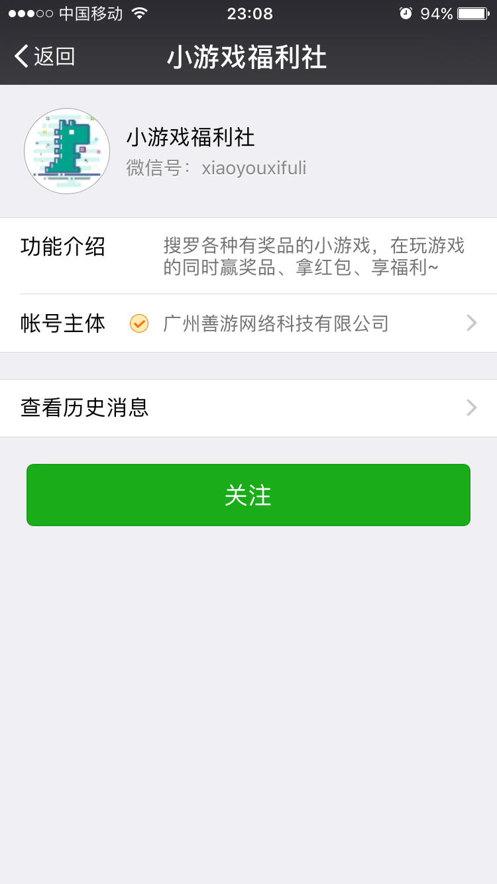
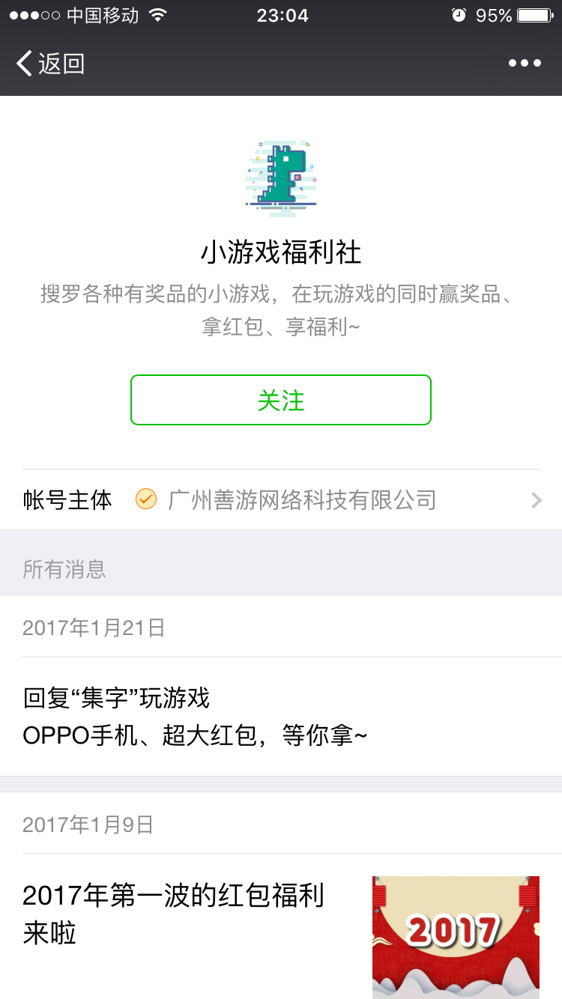
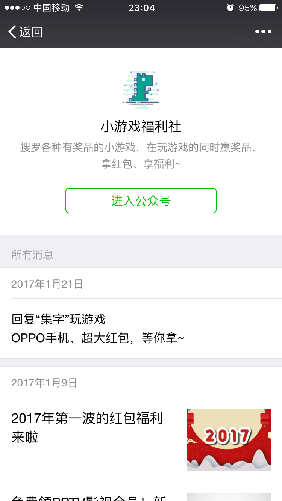
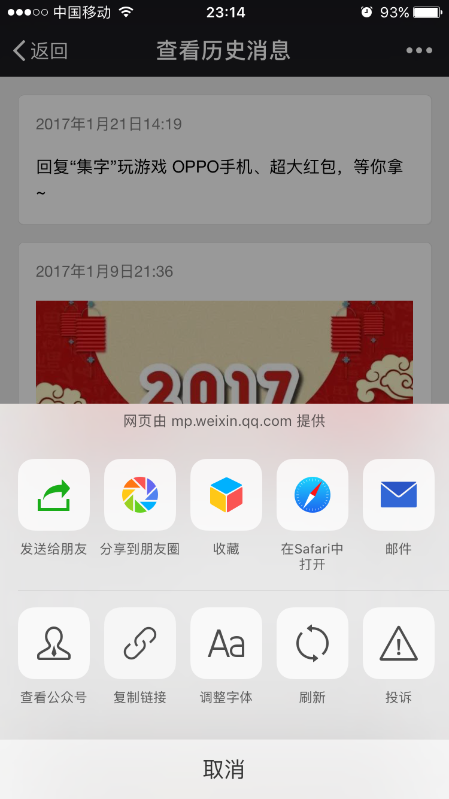

微信公众号的关注页面
之前一直都是没有链接的，访问的方式大多依靠二维码，页面如下所示：

现在可以稍微使用一点黑科技来生成这个页面的链接，已关注和未关注的页面效果如下：


怎样生成
第一步: 进入公众号关注页面，查看历史消息
第二步: 复制页面链接

第三步: 提取链接内容
例如，小游戏福利社的历史消息页面复制出来的链接如下：
需要提取的内容是，__biz=后面，==#wechat前面的一串文本，即上述链接中的：
MzI2OTQzNzM3NQ
第四步: 组合链接内容
将第三步中提取的内容，填入下面链接的XXX位置即可。
https://mp.weixin.qq.com/mp/profile_ext?action=home&__biz=XXX==#wechat_redirect
最终生成的链接：
https://mp.weixin.qq.com/mp/profile_ext?action=home&__biz=MzI2OTQzNzM3NQ==#wechat_redirect